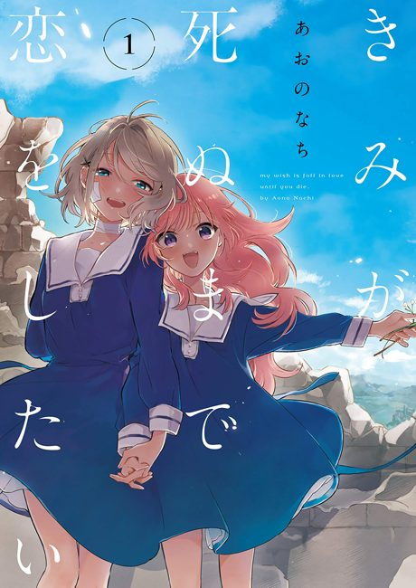
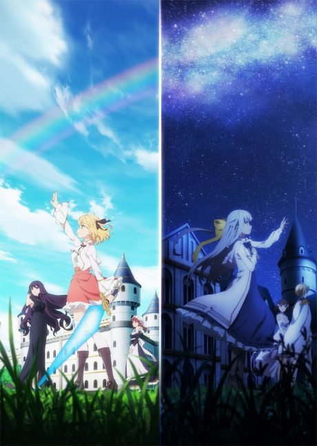
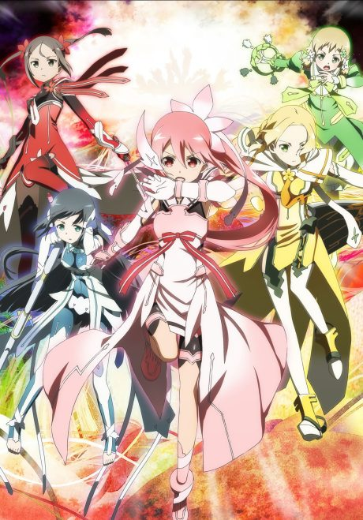
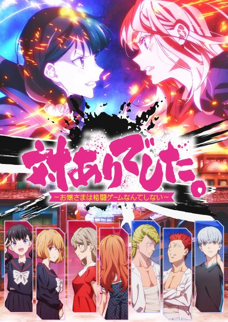
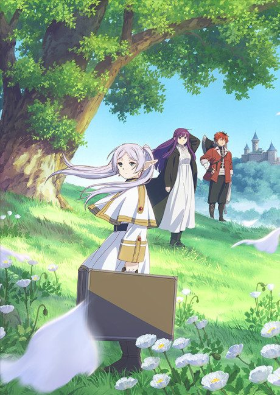
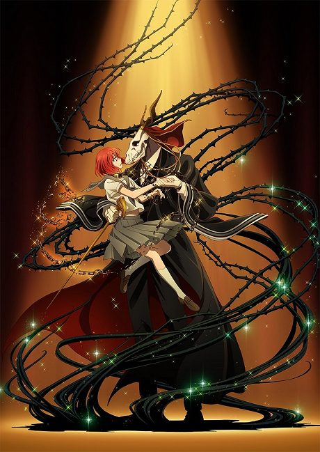
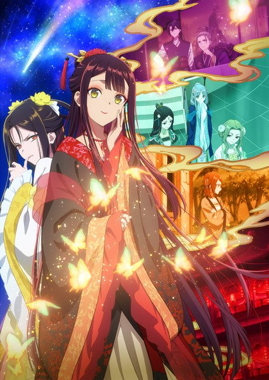
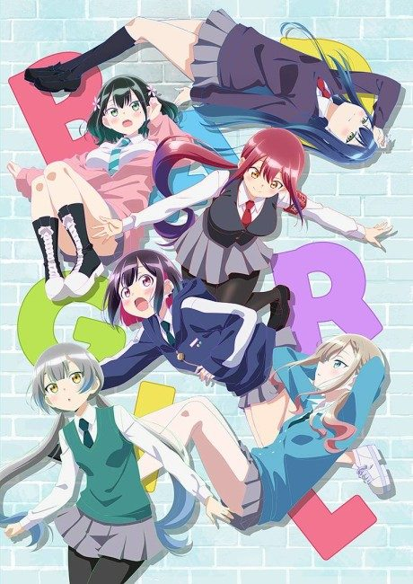

I Want to Love You Till Your Dying Day
きみが死ぬまで恋をしたい
Sheena, raised in an orphanage that trains girls as weapons, meets a girl named Arrow whose memories reset each night.
We haven't found where the anime ends in the manga yet.
7.5AniList score
—Animeter, no votes yet
13episodes
Rate it or report where you stopped
Anime finished. Where does the manga pick up?
StatusNo source yet
We looked for where the anime ends in the manga but found no source we trust yet. The manga is still running.
More like I Want to Love You Till Your Dying Day
 Original8.3
Original8.3

Manga Vol. 47.6
Original7.2 Manga Ch. 248.5
Manga Ch. 248.5
Manga Vol. 48.1
Secrets of the Silent Witch
Manga Ch. 257.8
Bloom Into You
Unclear7.5
Manga Ch. 819.1
Manga Ch. 967.8
Unclear8.1
Unclear7.1
Unclear7.1
Your Light: Kase-san and Morning Glories